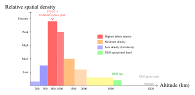

Chapter 28: Space Debris and Long-Term Sustainability¶
“We are conducting a grand experiment in orbit: filling a finite commons with an ever-growing population of objects, some operational, many dead, all moving at velocities that turn a paint flake into a projectile. The experiment has no control group.”
The near-Earth space environment is increasingly congested with the detritus of six decades of human spaceflight. More than 34,000 objects larger than 10 cm are tracked by the United States Space Surveillance Network (SSN); statistical models indicate the presence of perhaps 900,000 objects in the 1–10 cm size range—too small to track reliably but large enough to cause catastrophic damage to a spacecraft—and over 128 million fragments smaller than 1 cm. The aggregate mass of all artificial objects in Earth orbit exceeds 9,400 metric tons. This environment has been shaped by a handful of catastrophic fragmentation events, by the accumulation of rocket upper stages and defunct satellites, and by the proliferation of operational constellations that increase both the collision risk and the mitigation challenge. The threat is not hypothetical: it was concretely realized on February 10, 2009, when Iridium 33 and the defunct Cosmos 2251 collided at 789 km altitude, producing 2296 trackable fragments and demonstrating that the Kessler syndrome—a self-sustaining collision cascade—is not a theoretical curiosity but an operational risk that is already unfolding in specific altitude bands. This chapter develops the physics of the debris environment, the engineering of impact protection, the mathematics of cascade dynamics, the technology of active debris removal, and the governance frameworks emerging to ensure the long-term sustainability of Earth orbit as a shared resource (Kessler and Cour-Palais 1978).
28.1 Introduction¶
Orbital debris is, in essence, a tragedy of the commons at 7.8 km/s. Each actor who launches into orbit gains exclusive use of the launched spacecraft but shares the increased collision risk with all other operators—a classic externality that the market, without regulation, systematically underweights. Debris mitigation guidelines, passivation requirements, deorbit timelines, and active debris removal are all instruments directed at correcting this externality: internalizing the cost of orbital pollution that each mission imposes on the shared orbital environment.
The problem is physically self-amplifying in a way that distinguishes it from most environmental challenges. Above a critical debris density threshold—estimated to have already been crossed in certain altitude bands near 800 km—the collision rate between existing objects exceeds the natural removal rate from atmospheric drag. Even if all launches ceased tomorrow, the debris population in these altitude bands would continue to grow through mutual collisions over decades to centuries. This insight, captured mathematically by Kessler and Cour-Palais in 1978 (Kessler and Cour-Palais 1978), defines the urgency of both mitigation and active removal.
The chapter proceeds as follows. Section 28.2 characterizes the current debris environment quantitatively. Section 28.3 covers hypervelocity impact physics and Whipple shield design. Section 28.4 develops the cascade dynamics mathematically. Section 28.5 reviews Space Situational Awareness (SSA) sensors, catalog maintenance, and conjunction assessment. Sections 28.6 and 28.7 address mitigation guidelines and active debris removal technologies. Section 28.8 covers the broader sustainability governance and economics framework.
28.2 The Space Debris Environment¶
28.2.1 Population Statistics¶
The US Space Surveillance Network (SSN) maintained by US Space Command tracks objects larger than approximately 10 cm in LEO and 1 m in GEO, cataloging their orbital elements (TLE format) and publishing the data publicly via the Space-Track.org portal. As of 2024, the SSN catalog contains approximately 34,000 objects. The European Space Agency’s MASTER-8 (Meteoroid and Space Debris Terrestrial Environment Reference) statistical model extends the population characterization to smaller sizes using fragment size distributions derived from ground-based and orbital measurements, calibrated against known fragmentation events. MASTER-8 estimates approximately 900,000 objects in the 1–10 cm size range (too small to track with current ground-based radar but large enough to cause catastrophic satellite damage on impact) and over 128 million fragments below 1 cm. The total mass of all artificial objects in orbit—including intact spacecraft, rocket bodies, and debris—exceeds 9,400 metric tons, of which operational satellites account for approximately 2,500 metric tons.
NASA’s ORDEM (Orbital Debris Engineering Model, version 3.2) provides flux estimates for orbital debris impact assessment:
where \(\rho\) is the spatial density of objects larger than diameter \(d\) at altitude \(h\) and inclination \(i\), and \(V_\text{rel}\) is the average relative velocity. At the ISS altitude (400 km) and inclination (51.6\(^\circ\)), the ORDEM 3.2 impact flux for 1-cm objects is approximately \(5 \times 10^{-5}\) m\(^{-2}\) yr\(^{-1}\)—meaning a 1-m\(^2\) exposed surface would experience a 1-cm object impact roughly every 20,000 years, but the ISS’s exposed critical surface area is orders of magnitude larger, making MMOD (Micrometeoroid and Orbital Debris) a persistent design driver.
28.2.2 Debris Sources¶
The orbital debris population arises from several distinct source categories, each with characteristic size distributions and altitude profiles:
-
Fragmentation events (the majority of objects): The largest debris source by object count. Explosions of spent rocket upper stages (aging propellant and battery deterioration, residual propellant detonation) and hypervelocity collisions between tracked objects generate clouds of fragments spanning the full size spectrum from meter-scale down to sub-millimeter. The Breeze-M upper stage (used on the Russian Proton) has been responsible for several fragmentation events, cumulatively adding hundreds of tracked objects.
-
Rocket bodies: Upper stages and mission adapters left in operational orbits represent the largest individual debris objects—typically 1,000–4,000 kg each. Their large collision cross-section makes them disproportionate contributors to the Kessler cascade risk; a collision involving a rocket body can produce a very large number of fragments.
-
Mission-related debris: Separation nuts, clamp bands, lens caps, shrouds, payload adapters, and other objects released intentionally during mission operations.
-
Defunct satellites: Approximately 3,000 non-operational satellites tracked in the SSN catalog, spanning from Vanguard 1 (1958) to recent commercial failures.
-
Sub-centimeter fragments: Paint flakes detached by UV and thermal cycling, multi-layer insulation (MLI) fragments from aging thermal blankets, and solid propellant slag particles—untrackable but cumulatively representing a significant hypervelocity flux on exposed surfaces.
28.2.3 Major Fragmentation Events¶
A small number of catastrophic events have dominated the growth of the tracked debris population:
Fengyun-1C ASAT Test (January 11, 2007).
China’s destruction of its defunct Fengyun-1C weather satellite at 863 km altitude using a kinetic kill vehicle created 3537 new trackable fragments—the largest single contribution to the SSN catalog from any event. At 863 km altitude, atmospheric drag is negligible: the fragments will remain in orbit for centuries to millennia, with the highest-altitude pieces (apogee \(>\)2000 km) effectively permanent. The test increased the collision probability for objects at 750–1000 km altitude by approximately 10% and drew worldwide diplomatic criticism that led China to announce a moratorium on further destructive ASAT testing.
Iridium 33 / Cosmos 2251 Collision (February 10, 2009).
At 789 km altitude over Siberia, the operational Iridium 33 communication satellite collided with the defunct Russian Cosmos 2251 military communication satellite at a closing velocity of approximately 11.7 km/s—the first accidental collision between two intact satellites in history. The collision generated 2296 trackable fragments (with tens of thousands of smaller untracked pieces) and remains the single largest increase in LEO collision risk from a non-deliberate event. The Iridium constellation was redesigned to include automatic collision avoidance capability for subsequent generations, but the debris cloud from the collision persists at an altitude where it will remain hazardous for decades.
USA-193 Intercept (February 2008).
The US Navy’s destruction of the malfunctioning USA-193 reconnaissance satellite at 247 km altitude produced fragments that largely decayed within weeks due to the low altitude, avoiding the long-term persistence that characterized the FY-1C event. The decision to intercept was publicly justified on hydrazine propellant risk grounds.
28.2.4 Spatial Distribution by Altitude¶
The debris spatial density is strongly altitude-dependent, reflecting both the history of launch activities and the varying atmospheric drag lifetimes at different altitudes:
-
LEO (200–2000 km): Peak debris spatial density at 750–900 km, elevated by the FY-1C and Iridium/Cosmos events. Atmospheric drag lifetimes at 750 km are approximately 200–400 years; at 400 km (ISS), less than 1 year. The Starlink, OneWeb, and Kuiper constellations operate at 340–550 km where 5-year deorbit is naturally achievable.
-
MEO (2000–35,786 km): Lower debris density but including GPS, GLONASS, and Galileo satellite rings. Radiation belt trapping of charged fragments and nuclear-powered satellites (RORSAT program) create additional hazards. The van Allen belts significantly increase radiation dose rates for objects at MEO altitudes.
-
GEO (35,786 km): A ring of roughly 1500 satellites (operational and defunct) plus the accumulated objects from 60 years of GEO operations. Unlike LEO, there is no natural removal mechanism at GEO; disposal to a graveyard orbit 300+ km above the GEO arc is required to remove objects from the active operational band.
28.3 Impact Effects and Shielding¶
28.3.1 Hypervelocity Impact Physics¶
Objects in LEO collide with spacecraft surfaces at average velocities of approximately 10 km/s (mean for LEO object vs. operational satellite at similar altitude and inclination) with maximum closing velocities of approximately 15 km/s for head-on collisions. At these velocities, the impact process is dominated by hydrodynamic phenomena rather than material strength: both impactor and target material behave as fluids during the initial impact, with the shock wave pressure far exceeding the material yield strength. A 1-cm aluminum sphere impacting a thin aluminum wall at 10 km/s creates a crater \(\sim\)5 cm in diameter and may penetrate walls up to 1 cm thick; behind a simple wall, it produces a debris cloud of thousands of fragments more destructive than the original impactor.
The threshold for catastrophic fragmentation of a satellite—defined as producing more mass in fragments than in the largest remaining piece—corresponds to a specific energy threshold:
where \(m_p\) is the impactor mass, \(v_r\) is the relative velocity, and \(M_\text{target}\) is the target satellite mass. For a 1000-kg satellite at 10 km/s average impact velocity, catastrophic fragmentation requires an impactor of only \(m_p = 0.8\) kg—an object approximately 10 cm in diameter—demonstrating that untracked 10-cm objects represent a catastrophic threat to operational satellites.
28.3.2 Whipple Shield Design¶
The Whipple shield, invented by Fred Whipple in 1947, exploits the fact that a thin aluminum bumper plate vaporizes and disperses the impactor into a debris cloud whose energy is spread over a larger area, allowing a thinner rear wall to stop the dispersed fragments. The canonical penetration limit for the rear wall thickness \(t\) of a Whipple shield is given by the modified Cour-Palais equation:
where \(m_p\) is the impactor mass (g), \(v_r\) is the relative velocity (km/s), \(\theta\) is the impact angle from normal, \(\rho_B\) is the bumper density (g/cm\(^3\)), and \(S_{cr}\) is the standoff distance between bumper and rear wall (cm). Doubling the standoff distance reduces the rear wall thickness requirement by a factor \(2^{-1/3} \approx 0.79\) (about 21%)—illustrating the importance of maximizing standoff within spacecraft volume constraints.
Modern ISS shielding employs multi-shock shields with multiple thin bumper layers of different materials:
-
Outer aluminum 6061-T6 bumper (0.8–3.2 mm thick): vaporizes the impactor
-
Intermediate Nextel AF-62 ceramic fabric + Kevlar layers: captures and disperses fragment cloud
-
Inner aluminum or stuffed Whipple rear wall: final containment
Multi-shock shields stop larger projectiles at a given mass per unit area than a simple Whipple shield, which is why they are used on the more exposed parts of the ISS.
28.3.3 Impact Probability Analysis for ISS¶
The MMOD risk to the ISS is assessed using NASA’s BUMPER code, which integrates a debris flux model such as NASA’s ORDEM over the ISS surface geometry, accounting for orientation, shielding configuration, and module-specific critical area. The metric used is Probability of No Penetration (PNP):
where \(\Phi\) is the integrated MMOD flux for penetrating objects (m\(^{-2}\) yr\(^{-1}\)), \(A_c\) is the total critical exposed area (m\(^2\)), and \(\Delta t\) is the exposure time (yr). NASA sets a demanding PNP requirement for crewed modules, which drives the adoption of multi-shock shielding for habitable volumes.
28.4 Kessler Syndrome¶
28.4.1 Kessler-Cour-Palais Theory¶
Donald Kessler and Burton Cour-Palais published a landmark 1978 paper (Kessler and Cour-Palais 1978) demonstrating that, for a sufficiently dense debris population, the collision rate between objects exceeds the natural removal rate, initiating a self-sustaining cascade. The key insight is that the number of fragments produced by a collision grows with the colliding mass (in the NASA Standard Breakup Model the number of fragments larger than a given size scales with the mass raised to the power 0.75); if these new fragments have shorter atmospheric drag lifetimes they are removed, but if they orbit at altitudes where lifetimes exceed the orbital period by large factors, they persist to participate in further collisions.
28.4.2 Collision Rate Equation¶
The pairwise collision rate in an orbital shell of volume \(V_\text{total}\), object count \(N\), average collision cross-section \(\sigma = \pi(r_1 + r_2)^2\), and average relative velocity \(V_\text{rel}\) is:
The factor of \(\frac{1}{2}\) avoids double-counting pairwise collisions. For an illustrative case, the 750–900 km altitude band (where FY-1C and Iridium/Cosmos debris is concentrated), with \(N \approx 5000\) tracked objects, an assumed average cross-section \(\sigma \approx 1\) m\(^2\), \(V_\text{rel} = 10\) km/s and \(V_\text{total} \approx 1.2 \times 10^{12}\) km\(^3\), gives \(R_c \approx 0.003\) collisions per year—roughly one collision every 300 years among the tracked objects alone. Smaller untracked objects add many more potential collisions, mostly non-catastrophic, and detailed models give higher rates in the most crowded altitude bands.
28.4.3 Critical Density and Cascade Threshold¶
The critical spatial density \(\rho_\text{cr}\) at which the collision rate \(R_c\) equals the natural removal rate \(R_d = N/\tau_d\) (where \(\tau_d\) is the atmospheric drag lifetime) is:
where \(f\) is the fragmentation coefficient (fragments produced per collision exceeding the critical threshold). At 900 km altitude, the estimated critical density is approximately \(N_\text{cr} \approx 10^{-8}\) km\(^{-3}\), corresponding to roughly 500 objects larger than 10 cm in the 750–1000 km shell. Long-term evolution modeling using NASA’s LEGEND (LEO-to-GEO Environment Debris) Monte Carlo simulation indicates that this density is already exceeded in some altitude sub-bands when untracked objects are included, and that long-term projections show continued growth of the debris population in LEO without active debris removal, even with good compliance with mitigation guidelines.
The LEGEND model further quantifies the Active Debris Removal (ADR) requirement: removing of the order of 5–10 large objects per year (preferably intact rocket bodies or defunct satellites with large collision cross-sections) from the 800–900 km altitude band is sufficient to stabilize the population at approximately current levels—a conclusion that has driven the development of commercial ADR missions.
28.5 Space Situational Awareness¶
28.5.1 US Space Surveillance Network¶
The US Space Surveillance Network comprises more than 30 sensor sites worldwide, combining dedicated space surveillance radars and telescopes with sensors tasked from other primary missions. Key SSN sensors include:
-
Eglin AFB AN/FPS-85 (Florida): A UHF phased array radar, a long-serving sensor of the network for tracking satellites in low Earth orbit.
-
Ground-based Electro-Optical Deep Space Surveillance (GEODSS): One-meter aperture telescopes at Diego Garcia (Indian Ocean), Maui (Hawaii), and Socorro (New Mexico) provide deep-space (GEO and above) optical surveillance.
-
Globus II (Vardø, Norway): An X-band tracking radar in Norway, used for space object tracking and characterization, including radar cross-section (RCS) estimation.
-
Space Fence (Kwajalein Atoll, Marshall Islands; declared operational in 2020): An S-band phased array radar with separate transmit and receive arrays. It can detect and track much smaller objects in LEO than the older radars it supplements (down to a few centimetres), and is expected to add many thousands of new objects to the catalog.
28.5.2 Commercial Space Situational Awareness¶
A growing commercial SSA ecosystem supplements government sensors with higher revisit rates, specialized capabilities, and data products sold to satellite operators:
-
LeoLabs: Operates a network of phased array radars, including sites at Poker Flat (Alaska), Midland (Texas), New Zealand, Costa Rica and the Azores, and sells tracking data and conjunction assessment services to satellite operators and agencies.
-
ExoAnalytic Solutions: Operates a network of over 300 optical telescopes worldwide, including 25-cm aperture stations optimized for GEO and MEO surveillance. Provides commercial data products for GEO conjunction assessment, object characterization, and satellite health monitoring.
-
Slingshot Aerospace: Provides space traffic analytics and conjunction assessment products using a fusion of government and commercial sensor data, with a focus on automated conjunction screening for constellation operators.
28.5.3 Conjunction Assessment¶
The US Space Command 18th Space Control Squadron (18 SPCS, formerly 18th Space Control Squadron) provides conjunction assessment services to all satellite operators through the public portal space-track.org, screening all cataloged objects against each other and issuing Conjunction Data Messages (CDMs) when the probability of collision \(P_c\) exceeds notification thresholds.
The probability of collision is computed using the Alfano formulation that integrates the combined position-covariance probability density function over the hard-body region—a disk of radius \(r_1 + r_2\) (sum of the objects’ radii) in the plane of closest approach:
where \(p_\text{combined}(x,y)\) is the 2D Gaussian probability density in the miss-plane formed by the combined position error covariance of both objects. The standard maneuver threshold recommended by IADC and NASA is \(P_c > 10^{-4}\), above which a conjunction warrants serious consideration of an avoidance maneuver. The ISS executes approximately 25–30 avoidance maneuvers per year against debris conjunctions.
A critical limitation of current conjunction assessment is TLE accuracy: Two-Line Element sets have typical 1\(\sigma\) position errors of 1–2 km at epoch, growing to 10 km or more after 5 days of propagation. This large uncertainty dominates \(P_c\) calculations and drives many false-positive high-\(P_c\) alerts that do not materialize as actual close approaches. Improved orbital element sources (Laser ranging, commercial GNSS on satellites, commercial radar tracking) would substantially reduce uncertainty and improve maneuver decision quality.
28.5.4 Orbit Determination Accuracy¶
Ranging techniques vary enormously in accuracy: TLEs based on radar tracking have position uncertainties of 1 km at epoch; satellite laser ranging (SLR) achieves better than 1-cm ranging accuracy for retro-reflector-equipped satellites; VLBI (Very Long Baseline Interferometry) provides sub-centimeter angular positioning for radio-emitting satellites. The dramatic accuracy difference between TLE-based and high-precision orbit determination drives ongoing advocacy for broader deployment of laser reflectors on active satellites and for exchange of high-accuracy ephemeris data among operators.
28.6 Debris Mitigation Guidelines¶
28.6.1 IADC Mitigation Guidelines¶
The Inter-Agency Space Debris Coordination Committee (IADC), comprising 13 national space agencies, published the internationally recognized debris mitigation guidelines that form the basis of national and international regulation. The key provisions are (IADC 2007):
-
25-year deorbit rule: Objects in LEO at altitudes below 2000 km should complete reentry within 25 years of mission completion. This was the industry standard from 2002 until the FCC adopted a 5-year requirement for US-licensed satellites in 2022.
-
GEO graveyard orbit: GEO objects should be moved to a disposal orbit at least 300 km above the GEO arc (\(\geq\)36,086 km) at end of mission, where they will not interfere with active GEO operations. The required \(\Delta v\) for this disposal maneuver is approximately 11 m/s for typical GEO satellites.
-
Passivation: Within 5 years of end of life, all stored energy on the spacecraft must be depleted: propellant vented or burned, pressure vessels vented, batteries discharged through shorting resistors, and pyrotechnic devices safed. Passivation eliminates the risk of on-orbit explosions that have been responsible for the majority of fragmentation events.
-
Collision probability during disposal: The probability of collision with a cataloged object during the disposal maneuver must be less than 0.001.
-
Casualty risk at reentry: The probability of human casualty from surviving reentry fragments on Earth’s surface must be less than \(10^{-4}\) per reentry event.
28.6.2 FCC 5-Year Deorbit Rule¶
In September 2022, the US Federal Communications Commission adopted a rule reducing the post-mission deorbit time for US-licensed satellites in LEO from 25 years to 5 years, applying to satellites launched after September 2024. This revision, informed by technical analyses showing that 5-year compliance substantially reduces the probability of a Kessler cascade at the densely populated 800–900 km altitudes, applies to Starlink (operating at 340–550 km where natural deorbit within 5 years is achievable), OneWeb, and future Amazon Kuiper deployments. Operators who fail to comply may forfeit bonds of $1 million per satellite and risk revocation of their FCC operating licenses.
28.6.3 Design for Demise¶
The casualty area (\(A_c\)) of a reentering spacecraft is the effective area around a ground impact point within which a standing person would be killed by fragment impact, computed as the sum of geometric areas of all surviving fragments augmented by the kinetic lethal radius:
where \(d_{\text{frag},i}\) is the diameter of the \(i\)th surviving fragment in meters, and 0.6 m is the assumed average human body radius. The IADC limit is \(A_\text{casualty} < 8\) m\(^2\) per reentry event; exceeding this requires a controlled reentry to an uninhabited ocean zone.
The Design for Demise (D4D) philosophy maximizes the fraction of spacecraft mass that ablates and vaporizes in the reentry heating environment (above 80 km altitude) rather than surviving to the surface. Aluminum alloy components (melting point 933 K) readily demise; titanium alloy components (melting point 1941 K) and carbon fiber reinforced polymer (CFRP) tubes with titanium inserts frequently survive to the surface. Tantalum capacitors (melting point 3290 K) are among the most likely components to survive complete reentry. Modern satellite design for demise replaces titanium fasteners with aluminum equivalents, eliminates CFRP tubes in structural locations, and substitutes aluminum electrolytic capacitors for tantalum types where circuit requirements permit. ESA’s DRAMA (Debris Risk Assessment and Mitigation Analysis) software tool propagates heat transfer through the satellite structure during reentry to estimate surviving mass and casualty area.
28.6.4 Passivation Design¶
Passivation failures—aging propulsion and battery systems exploding rather than passivating—represent the dominant source of debris fragmentation events. Engineering solutions implemented in modern satellite designs include:
-
Propellant venting: Self-pressurizing orifice valves or pyrotechnic line cutters open propellant tank vents after a programmable delay (typically 1–3 years post-EOL), allowing residual bipropellant or monopropellant to vent to vacuum in a controlled manner.
-
Pressure vessel venting: High-pressure helium pressurant tanks vent through burst disks or redundant solenoid valves actuated by EOL command; the delayed activation (1 year post-EOL) provides a safety margin before the command is executed.
-
Battery passivation: End-of-life controller logic applies a shorting resistor across battery cells, dissipating stored charge within minutes; some designs incorporate pyrotechnic cell breakers as a backup.
-
Pyrotechnic safing: Initiator circuits are permanently disabled by firing safety pins or removing bridge wire circuits, preventing accidental actuation of separation systems from accumulated electrostatic charge.
28.7 Active Debris Removal¶
28.7.1 RemoveDEBRIS Mission¶
The RemoveDEBRIS mission (Surrey Space Centre / Airbus DS, 100-kg satellite, taken to the ISS in April 2018 and deployed in June 2018) conducted the first in-orbit demonstrations of active debris removal technologies:
-
Net capture (September 2018): A 5\(\times\)5 m Vectran braided net was ejected at 7-m range toward a deployed DebriSat target, successfully enveloping and capturing it. Net ejection was performed with four corner masses providing spin stability, and closure of the net mouth was achieved by a drawstring mechanism.
-
Harpoon capture (February 2019): A 1.5-kg CFRP target panel was deployed on a 1.5-m tether, and a spring-launched harpoon projectile at 20 m/s successfully penetrated the panel and retained attachment through barbed tip engagement.
-
Vision-Based Navigation (VBN) demonstration: AI-enhanced proximity operations navigation using monocular cameras tracked the DebriSat target over a range of 3–10 m.
-
Drag sail deorbit: A 10-m\(^2\) drag augmentation sail was deployed in February 2019, accelerating deorbit from the 400-km altitude by increasing ballistic coefficient drag.
28.7.2 ESA ClearSpace-1¶
ESA’s ClearSpace-1 mission, contracted to ClearSpace SA (Switzerland) for approximately EUR 86 million, was originally to target the Vespa (Vega Secondary Payload Adapter) ring—a 112-kg CFRP structural ring left in a 664-km orbit by the second Vega flight in 2013. The concept was to capture the Vespa with four articulated claw arms with compliant contact fingers, and then to perform a deorbit burn to destructive reentry. The mission was later redefined (in 2023 ESA changed the target to its own PROBA-1 satellite) and its launch date has slipped more than once, so it has not yet flown. The mission serves simultaneously as a demonstration of ESA’s commercial ADR service procurement model and as a technology pathfinder for future higher-rate ADR operations.
28.7.3 Astroscale ELSA-d and CRD2¶
Astroscale’s ELSA-d mission (2021) demonstrated the magnetic docking plate concept: the 17-kg client satellite carried a permanent magnet docking plate, and the 175-kg chaser demonstrated approach, capture, release, and re-capture in multiple geometries, including with the client in a slowly tumbling non-cooperative attitude. The magnetic capture approach avoids the complex mechanical latching required for physical grapple mechanisms and tolerates some residual misalignment at contact.
JAXA’s Commercial Removal of Debris Demonstration (CRD2) Phase 1—the ADRAS-J (Active Debris Removal by Astroscale-Japan) mission, launched February 2024—conducted proximity operations around the intact H-IIA rocket body (3000 kg) at approximately 600-km orbit, characterizing the tumbling rate, surface condition, and approach envelope of a real-world large debris target without physical capture. Phase 2 will include physical capture and deorbit.
28.7.4 Ion Beam Shepherd¶
The Ion Beam Shepherd (IBS) concept proposes contactless debris removal by directing the exhaust plume of an electric propulsion thruster toward the debris object’s surface, imparting a net photon-plus-ion-pressure force that gradually alters its orbit. The effective force on the debris is approximately:
where \(P_\text{thrust}\) is the thruster power, \(v_\text{exhaust}\) is the ion exhaust velocity, and the geometric factor accounts for beam interception by the target cross-section. For a 100-W Hall thruster at 60-cm standoff distance from a 1-m cross-section debris object, the effective IBS force is approximately 1 mN—enough to change orbital velocity by 1 m/s per week, or deorbit from 800 km in approximately 3 years. A secondary thruster on the opposite face of the shepherd spacecraft maintains formation flying at the required standoff distance. The primary advantage of IBS is that no physical contact is required, eliminating the risk of uncontrolled collision during capture of a tumbling target.
28.7.5 Laser Ablation¶
Ground-based or space-based high-power pulsed lasers can generate a debris-deorbit force by ablating material from the debris surface. A 100-kW peak-power pulsed laser (pulse energy \(\sim\)1 J, repetition rate 100 kHz) focused on a debris surface at 500-km altitude generates a localized plasma plume via ablation, imparting a specific impulse of \(\sim\)1 cm/s per pulse and \(\sim\)1 m/s total \(\Delta v\) per 100-pass engagement over several months. The LODR (Laser Orbital Debris Removal) program explored this concept; key challenges are adaptive optics (AO) correction for atmospheric turbulence to maintain focused spot at 500 km, pointing stability (\(<\)0.1 \(\mu\)rad jitter), and the requirement to track tumbling objects with high fidelity. Laser ablation is particularly attractive for the 1–10 cm debris size range—too small to capture with mechanical systems but individually too numerous for one-by-one physical removal missions.
28.7.6 Harpoon and Net Systems¶
Harpoon and net capture mechanisms have both been demonstrated by RemoveDEBRIS (as described above) and continue to be developed for operational ADR missions. The Airbus harpoon system fires a 150-g titanium barbed projectile at 20–30 m/s; on penetration of the target surface, a spring-loaded barb deploys to provide retention. A tether connects the harpoon to the servicer spacecraft; after secure harpoon attachment, the servicer fires its thruster to initiate deorbit. Net capture is preferred for large, tumbling targets where harpoon penetration angle is uncertain; net ejection speed, closing velocity, and net-mouth-to-target-ratio are the key design parameters for reliable capture at approach ranges of 5–20 m.
28.7.7 Electrostatic Tug¶
The electrostatic tug concept applies primarily to debris removal in GEO, where the long-range Coulomb force between charged spacecraft is significant due to the natural charging environment (no ionosphere, direct solar UV, energetic plasma). A servicer spacecraft and its target debris are charged to differential potentials of \(\pm\)kV using electron guns and ion beams, generating an attractive Coulomb force:
where \(k_e = 9 \times 10^9\) N\(\cdot\)m\(^2\)/C\(^2\), \(Q_1\), \(Q_2\) are the charges on the two spacecraft, and \(r\) is the separation distance. At \(r = 20\) m, \(Q_1 = -Q_2 = 1~\mu\)C, the attractive force is approximately 22.5 \(\mu\)N—comparable to a small Hall thruster thrust—sufficient to slowly detumble and deorbit a GEO debris object over months of operation. The electrostatic tug avoids physical contact entirely, a key advantage for tumbling objects at GEO where synchronization maneuvers would require large propellant expenditure.
28.8 Long-Term Sustainability¶
28.8.1 Space Sustainability Rating¶
The World Economic Forum’s Space Sustainability Rating (SSR), launched in 2021 in partnership with ESA, EPFL and other institutions, provides a voluntary certification scheme for satellite missions that quantifies and publicly discloses their sustainability practices. The SSR evaluates missions across nine indicators including: collision probability and conjunction data sharing; adherence to deorbit timelines; passivation compliance; post-mission disposal reliability; propulsion capability for avoidance maneuvers; and transparency of operations. Scores are publicly published on a 1–10 scale, creating reputational incentives for operators to improve sustainability practices and providing investors, insurers, and regulators with standardized, comparable sustainability metrics.
28.8.2 Long-Term Evolution Projections¶
ESA’s DELTA (Debris Evolution Long Term Analysis) model projects the LEO debris environment 100–200 years forward under different launch traffic and mitigation scenarios:
-
Without ADR, current launch traffic: Debris population at 800 km increases by approximately 50% by 2100, with cascade probability \(>\)10% per decade beginning in the 2050s.
-
With 5 ADR removals per year at 800–900 km: Population at 800 km stabilizes near current levels; cascade probability remains below 5% per decade through 2100.
-
With 10 ADR removals per year: Slow population decline at 800 km; 200-year projections show environment recovering toward pre-FY-1C levels.
These projections underscore the conclusion that passive mitigation alone (even with perfect compliance) is insufficient to stabilize the environment at current levels; active removal at a rate of at least 5 large objects per year is required as a minimum.
28.8.3 International Governance¶
The COPUOS (Committee on the Peaceful Uses of Outer Space) Working Group on the Long-Term Sustainability (LTS) of Outer Space Activities published 21 consensus guidelines in 2019, covering space debris mitigation, space operations, space weather, and regulatory transparency. The guidelines are non-binding but represent the broadest international consensus on space sustainability practices ever achieved.
Key governance developments include:
-
US SPD-3 (2018): Space Policy Directive 3 established a US national policy for space traffic management, directing the Department of Commerce to provide basic SSA services to civil operators and directing development of a national STM architecture.
-
ASAT test moratoria: The United States unilaterally declared a moratorium on destructive direct-ascent ASAT testing in April 2022, joined by Canada, Japan, the United Kingdom, and other allied nations; the moratorium does not yet have international treaty force but represents a meaningful political commitment.
-
ITU milestone filings: The ITU has implemented stricter requirements for non-geostationary satellite system filings, requiring demonstrable deployment progress to prevent “paper satellite” filings that reserve spectrum without actual deployment.
-
National STM frameworks: The UK Space Sustainability Registry, ESA Space Safety Program, and France’s GRAVES radar form nascent national contributions to a future multilateral space traffic management system.
28.8.4 Economics of Debris Prevention¶
The economic case for debris mitigation is compelling when external costs are properly internalized. Cost to incorporate design-for-demise features (aluminum substitution for titanium fasteners, component redesign): approximately $100,000 per satellite at the design stage. Cost of deorbit propulsion capability for LEO satellites (5-year compliant deorbit): approximately $200,000–500,000 in propellant and propulsion hardware per satellite. Cost of a single collision event for the affected satellite operator: $200–500 million (satellite replacement, revenue loss, insurance claim). Cost to third parties from the resulting debris cloud: uninsured externality imposed on all LEO operators, potentially exceeding $1 billion in increased risk exposure.
The insurance market is beginning to reflect this reality: space insurers including AXA XL and Munich Re are reported to take mitigation practices into account when pricing cover. Post-Cosmos 2251, several insurers introduced conjunction-related policy exclusions for damage caused by cataloged debris—creating a liability gap that motivates operators to seek better SSA services.
28.9 Key Equations¶
Kessler Collision Rate.
Cascade condition: \(R_c > N/\tau_d\) \(\Rightarrow\) \(N > N_\text{cr} = 2 V_\text{total}/(\sigma V_\text{rel} \tau_d f)\).
Alfano Collision Probability.
where \(r_c = r_1 + r_2\), \((\sigma_x, \sigma_y)\) are the combined miss-plane standard deviations, and \((x_\text{TCA}, y_\text{TCA})\) is the nominal miss vector at Time of Closest Approach.
Whipple Shield Penetration Limit.
Deorbit \(\Delta v\) from Atmospheric Drag.
The \(\Delta v\) required to reduce perigee from \(h_p\) to reentry altitude \(h_r\) (assuming circular starting orbit at altitude \(h\)):
For deorbit from 800 km to 120 km reentry interface: \(\Delta v \approx 155\) m/s; from 550 km (Starlink): \(\Delta v \approx 45\) m/s for 5-year atmospheric-only deorbit at \(h_p = 300\) km.
28.10 Debris Data Tables¶
| Event | Date | Alt. (km) | New tracks | Still orbiting | Type |
|---|---|---|---|---|---|
| Solwind ASAT (P78-1) | Sep 1985 | 525 | \(\sim\)250 | 0 | ASAT test |
| Fengyun-1C ASAT | Jan 2007 | 863 | 3537 | \(\sim\)3000 | ASAT test |
| USA-193 intercept | Feb 2008 | 247 | \(\sim\)170 | 0 | ASAT test |
| Iridium 33/Cosmos 2251 | Feb 2009 | 789 | 2296 | \(\sim\)1600 | Accidental collision |
| Breeze-M stage frag. | 2007–2015 | 800–900 | \(\sim\)500 | \(\sim\)400 | Propulsion explosion |
| Method | Status | TRL | Force (mN) | Key Advantage |
|---|---|---|---|---|
| Net capture | Demonstrated (RemoveDEBRIS) | 7 | N/A (contact) | Large capture envelope |
| Harpoon | Demonstrated (RemoveDEBRIS) | 6 | N/A (tether) | Penetrates irregular surfaces |
| Claw/robotic arm | In development (ClearSpace-1) | 5 | N/A (contact) | Compliant multi-point grasp |
| Magnetic docking | Demonstrated (ELSA-d) | 7 | N/A (contact) | Non-destructive, reusable |
| Ion Beam Shepherd | Analytical/lab | 3–4 | \(\sim\)1 | No contact, works on tumbling targets |
| Electrostatic tug | Analytical/lab | 3 | \(\sim\)0.02 | No contact, GEO-optimized |
| Laser ablation | Ground demo | 3–4 | \(\sim\)0.5 | Works on 1–10 cm fragments |
28.11 Debris Altitude Distribution Diagram¶
Figure 28.1 illustrates the approximate spatial density of the tracked debris population as a function of altitude.

28.12 Summary¶
Chapter 28 Key Takeaways
-
The orbital debris environment comprises 34,000 tracked objects, \(\sim\)900,000 objects in the 1–10 cm range, and \(>\)128 million sub-centimeter fragments totaling 9,400 metric tons—a population dominated by fragmentation events (the majority of objects by count).
-
The Iridium 33/Cosmos 2251 collision (2009) and Fengyun-1C ASAT test (2007) collectively added \(\sim\)5800 new tracked objects concentrated at 750–900 km, the altitude range most susceptible to Kessler cascade.
-
Whipple multi-shock shields protect spacecraft against \(\sim\)1-cm objects; Probability of No Penetration (PNP) \(\geq 0.995\)/year is the NASA standard for ISS crewed modules.
-
The Kessler cascade condition—where collision rate exceeds atmospheric removal rate—is estimated to have already been exceeded at some altitude sub-bands at 750–900 km when untracked objects are included; NASA LEGEND modeling requires 5 ADR removals per year to stabilize the population.
-
Conjunction assessment with the Alfano \(P_c\) formulation uses combined position covariance; the maneuver threshold \(P_c > 10^{-4}\) drives \(\sim\)30 ISS avoidance maneuvers per year.
-
IADC mitigation guidelines (25-year deorbit, GEO graveyard, passivation) form the international baseline; the 2022 FCC revision to a 5-year US requirement is more stringent for LEO.
-
Active debris removal technologies—net, harpoon, claw (ClearSpace-1), magnetic capture (ELSA-d), ion beam shepherd, electrostatic tug—span TRL 3–7; the JAXA CRD2/ADRAS-J mission (2024) marked the first proximity operations around an actual large debris target.
-
Removing 5 large objects per year (preferably intact rocket bodies) from the 800–900 km band is the minimum required to stabilize the LEO debris population at current levels per LEGEND modeling.